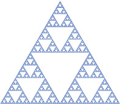

A fractal is a non-regular geometric shape that has the same degree of non-regularity on all scales. Fractals can be thought of as never-ending patterns. Clear? No? OK. Think of fractals as infinitely repeating patterns that form a shape (and if you're a math person, I know that's still not exactly right. Cut me some slack. I was a history major). One such fractal is the Sierpinski Triangle, a fractal with an overall shape of an equilateral triangle and is subdivided recursively into smaller triangles. The picture to the right is an example.
There are a number of ways to form a Sierpinksi Triangle. One of the most interesting is called "chaos game". As Wikipedia describes the process, you can form a Sierpinski Triangle using the following steps:
When you first begin to draw the dots using these steps, the arrangement looks pretty chaotic. However, the more dots you draw, the more it begins to take shape. This page has been programmed to draw a given number of dots using the steps outlined above. Below, enter the number of dots you like to draw and click "Draw". Start small, with something like 100. Then keep increasing the number until you see the Sierpinski Triangle appear. You'll need to scroll down to see the shape.